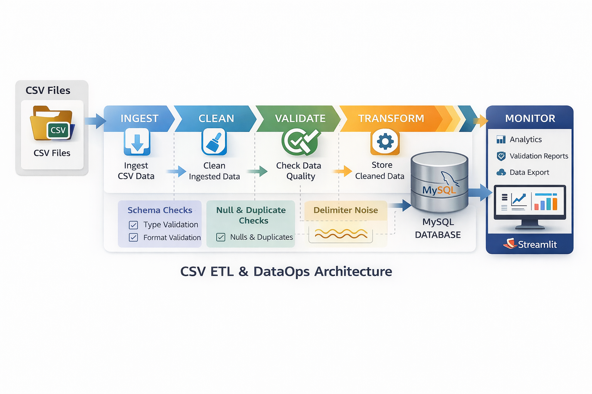

Automated Multi-Dataset ETL & Analytics Dashboard
An analytics-focused ETL system that ingests multiple CSV files, cleans and validates the data, loads it into MySQL, and provides interactive dashboards with detailed validation reports.
Analytical Problem
In real-world analytics workflows, data rarely arrives in a clean or standardized format. CSV files often contain inconsistent encodings, missing values, malformed rows, mixed data types, and schema mismatches. Most demo ETL pipelines fail when faced with such issues, leading to crashes, unreliable analytics, and manual rework.
Action Plan
This project implements an automated, production-ready ETL pipeline that intelligently ingests multiple CSV files, performs robust cleaning and validation, and safely loads the transformed data into a MySQL database. The system exposes detailed data-quality metrics and interactive dashboards using Streamlit, ensuring transparency, reliability, and zero pipeline failures.
DataOps Architecture

CSV ingestion → cleaning → validation → transformation → MySQL → Streamlit dashboards
Live ETL Dashboard
Select a dataset to view interactive dashboards, validation metrics, and download cleaned data.
Open Live Streamlit App